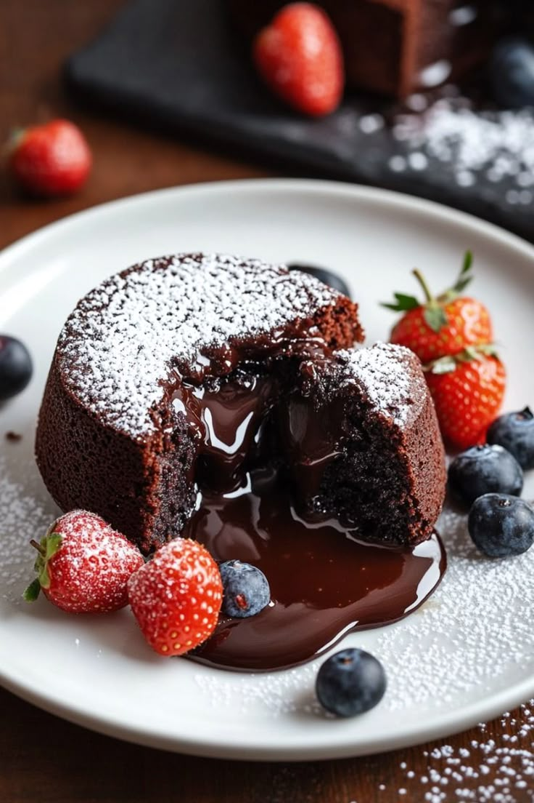
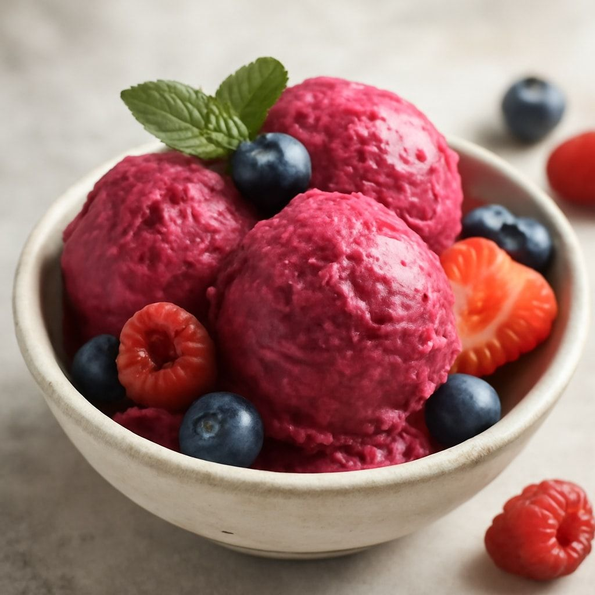
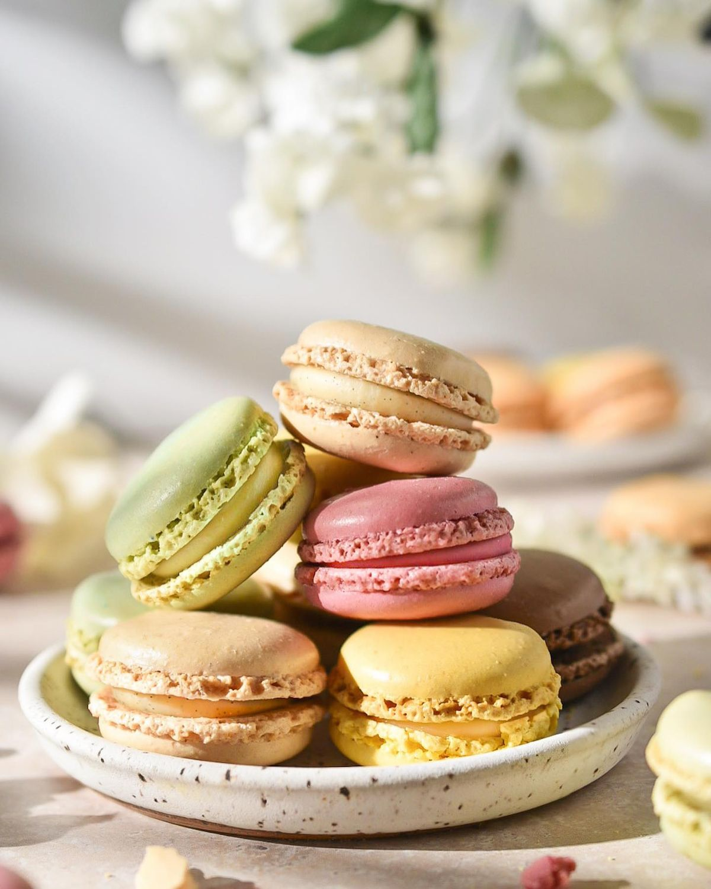
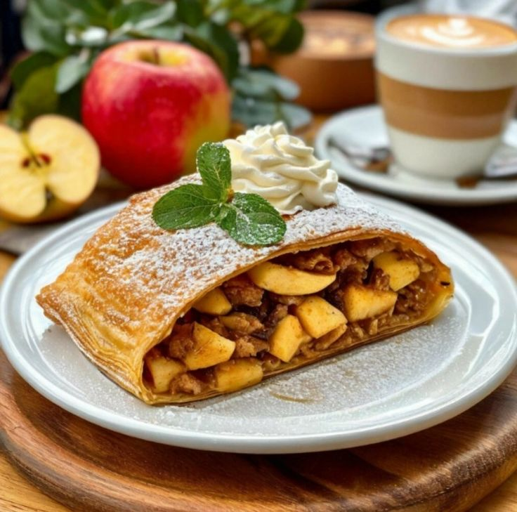

Десерти, які роблять життя яскравішим




Інгредієнти: Савоярді, маскарпоне, кава, какао, яйця, цукор.
Приготування: Збийте крем з маскарпоне. Вмочуйте печиво в каву, викладайте шарами з кремом. Посипте какао.
Інгредієнти: Пісочне печиво, вершковий сир (Філадельфія), вершки, цукор, яйця.
Приготування: Зробіть основу з печива. Змішайте сир з іншими інгредієнтами, вилийте на основу та запікайте на водяній бані.
Інгредієнти: Чорний шоколад, вершкове масло, борошно, яйця, цукор.
Приготування: Розтопіть шоколад з маслом. Змішайте з яйцями та борошном. Запікайте рівно 8-10 хвилин при 200°C.
Інгредієнти: 500г заморожених ягід (малина або полуниця), 100г цукрової пудри, 1 ст.л. лимонного соку.
Приготування: Збийте ягоди з пудрою та соком у блендері до однорідності. Поставте в морозилку на 2 години, помішуючи кожні 30 хвилин.
Інгредієнти: Мигдалеве борошно, цукрова пудра, яєчні білки, барвник, ганаш для начинки.
Приготування: Збийте білки з пудрою, змішайте з мигдалевим борошном. Висадіть на деко кружечки, дайте підсохнути 30 хв і випікайте 12-15 хв при 150°C. З'єднайте половинки кремом.
Інгредієнти: Листкове тісто, 3 яблука, 50г родзинок, кориця, цукор, вершкове масло.
Приготування: Наріжте яблука, змішайте з корицею та цукром. Викладіть на тонко розкатане тісто, згорніть рулетом і запікайте 30-35 хвилин при 180°C.